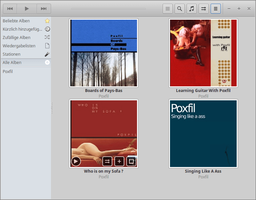
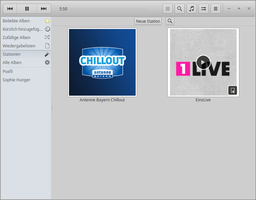
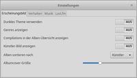

Lollypop
Dieser Artikel wurde für die folgenden Ubuntu-Versionen getestet:
Ubuntu 16.04 Xenial Xerus
Ubuntu 14.04 Trusty Tahr
Zum Verständnis dieses Artikels sind folgende Seiten hilfreich:

|  |
| Alben-Ansicht |
Lollypop  ist ein Audioplayer, der einige interessante Zusatzfunktionen beinhaltet. Obwohl für den Einsatz unter der GNOME Shell konzipiert, eignet sich das Programm für alle auf der Grafikbibliothek GTK 3 basierenden Desktop-Umgebungen.
ist ein Audioplayer, der einige interessante Zusatzfunktionen beinhaltet. Obwohl für den Einsatz unter der GNOME Shell konzipiert, eignet sich das Programm für alle auf der Grafikbibliothek GTK 3 basierenden Desktop-Umgebungen.
Unterstützung von Replay Gain
Suchfunktion, die auch Wiedergabelisten erstellen kann
Automatisches Herunterladen von Coverbildern
Erweiterte Künstler-Informationen via LastFM und/oder DuckDuckGo
MTP-Synchronisation
Vollbild- und Party-Modus
Erstellt wurde das Programm mit Python. Zur Katalogisierung der Musikbibliothek werden SQLite-Datenbanken verwendet.
Installation¶
 Das Programm ist nicht in den offiziellen Paketquellen enthalten. Daher muss man auf das "Personal Packages Archiv" (PPA) [1] des Entwicklers ausweichen.
Das Programm ist nicht in den offiziellen Paketquellen enthalten. Daher muss man auf das "Personal Packages Archiv" (PPA) [1] des Entwicklers ausweichen.
PPA¶
Adresszeile zum Hinzufügen des PPAs:
ppa:gnumdk/lollypop
Hinweis!
Zusätzliche Fremdquellen können das System gefährden.
Ein PPA unterstützt nicht zwangsläufig alle Ubuntu-Versionen. Weitere Informationen sind der  PPA-Beschreibung des Eigentümers/Teams gnumdk zu entnehmen.
PPA-Beschreibung des Eigentümers/Teams gnumdk zu entnehmen.
Damit Pakete aus dem PPA genutzt werden können, müssen die Paketquellen neu eingelesen werden.
Nach dem Aktualisieren der Paketquellen kann folgendes Paket installiert werden [2]:
lollypop (ppa)
 mit apturl
mit apturl
Paketliste zum Kopieren:
sudo apt-get install lollypop
sudo aptitude install lollypop
Verwendung¶
Bei Ubuntu-Varianten mit einem Anwendungsmenü findet man einen Programmstarter unter "Multimedia -> Lollypop" [3]. Ansonsten verwendet man den Programmnamen bzw. den Befehl lollypop.
Die Titelleiste enthält mehrere Schaltflächen zur Steuerung der Wiedergabe sowie einen Schnellzugriff auf die Suchfunktion und die Einstellungen. Hier befindet sich auch die Möglichkeit zum Aktivieren des "Party-Modus". Am linken Fensterrand ist die Musik-Bibliothek nach folgenden Kriterien gegliedert:
"Beliebte Alben"
"Kürzlich hinzugefügte Alben"
"Zufällige Alben"
"Wiedergabelisten" - beliebte, kürzlich hinzugefügte oder noch nie abgespielte Titel
"Stationen" - Internetradios hinzufügen, ändern oder löschen
"Alle Alben"
Unterhalb dieser Gliederung folgt eine alphabetische Liste der Künstler.
In der Voreinstellung werden alle im Ordner ~/Musik/ im Homeverzeichnis enthaltenen Audiodateien berücksichtigt. Dieses Verhalten kann in den Einstellungen angepasst werden, um weitere Ordner einzubinden.
Stationen hinzufügen¶
|  |
| Internetradio-Stationen |
Um ein Internetradio hinzuzufügen, wird neben einem beliebig wählbaren Namen die Stream-URL benötigt. Diese ist beispielsweise den im Artikel Internetradio/Streamadressen ermitteln genannten Stream-Verzeichnissen zu entnehmen. Dabei sollten URLs bevorzugt werden, die auf .m3u oder .pls enden. Webradios mit proprietären Stream-Formaten (Flash, Windows-Streams) können nicht abgespielt werden.
Ein passendes Senderlogo wird automatisch ermittelt – was nur dann klappt, wenn der gewählte Sendername eindeutig ist. Vorhandene Stationen können über einen Klick auf ein kleines Symbol rechts unten geändert oder gelöscht werden, das erscheint, wenn sich der Mauszeiger auf der Senderschaltfläche befindet.
Einstellungen¶
Die vom Nutzer vorzunehmenden Einstellungen sind auf ein Mindestmaß reduziert. Angepasst werden können: 
"Erscheinungsbild" - Design anpassen, Cover-Bilder anzeigen, usw.
"Verhalten" - u.a. Bibliothek automatisch aktualisieren
"Musik" - lokale Ordner, deren Inhalte automatisch durchsucht werden sollen
"Last.fm" - Zugangsdaten konfigurieren
Gespeichert werden diese Einstellungen im Ordner ~/.local/share/lollypop/. Dieser Ordner enthält auch die eingangs erwähnten Datenbanken.
Experten-Info:
Fortgeschrittene können auch den dconf-editor nutzen, um die Einstellungen unterhalb des Schlüssels org.gnome.Lollypop anzupassen.
 Übersichtsseite
Übersichtsseite- Erstellt mit Inyoka
-
 2004 – 2017 ubuntuusers.de • Einige Rechte vorbehalten
2004 – 2017 ubuntuusers.de • Einige Rechte vorbehalten
Lizenz • Kontakt • Datenschutz • Impressum • Serverstatus -
Serverhousing gespendet von